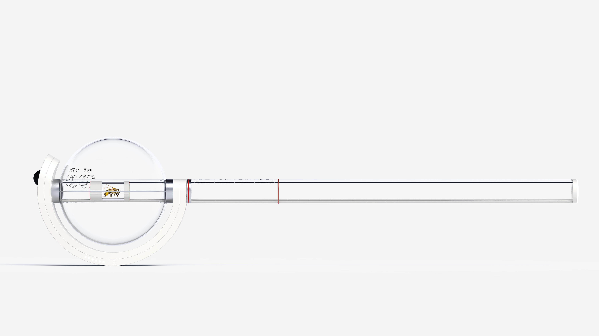
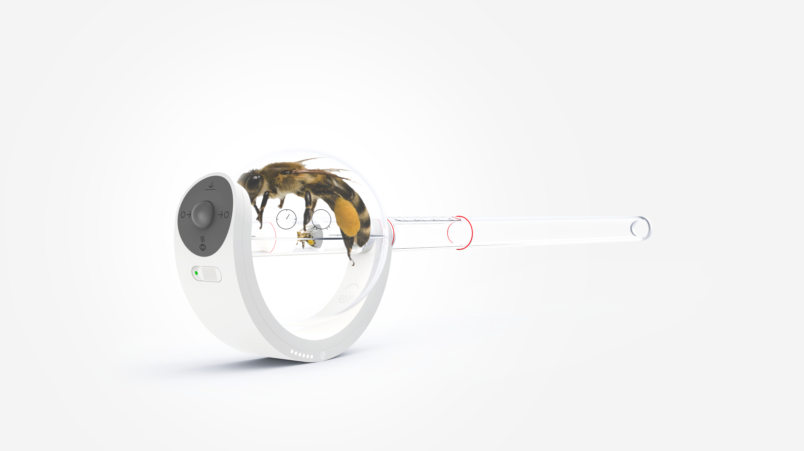
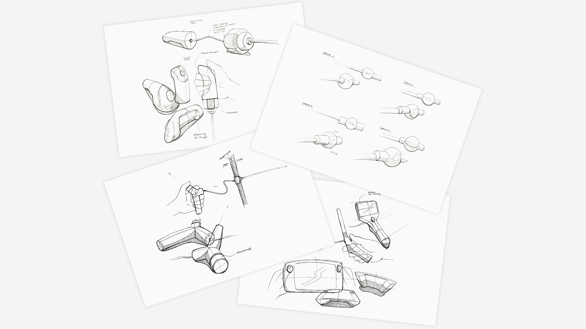
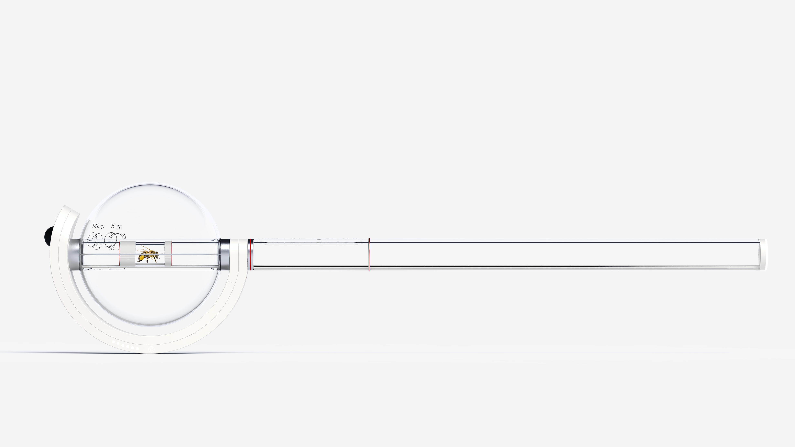
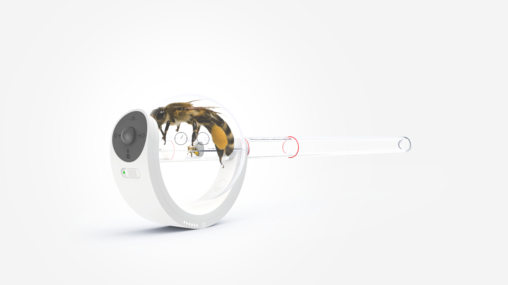
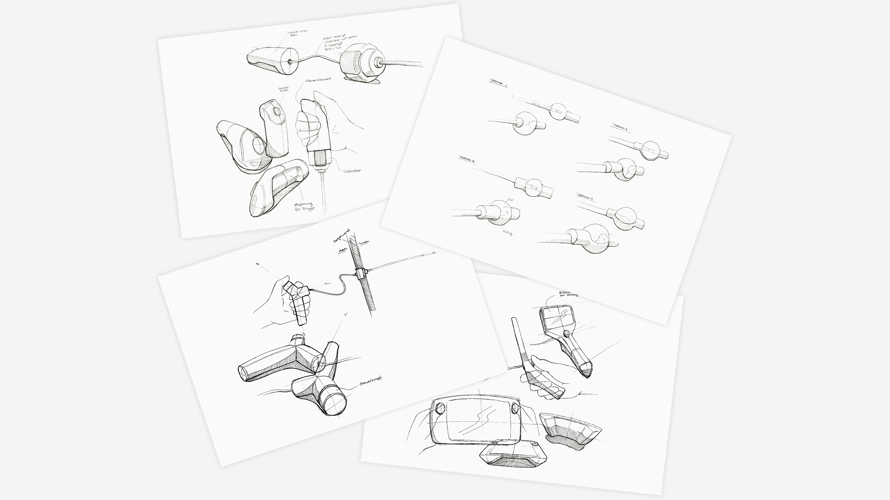

I’m Lisa Reichardt, a senior UX/UI designer shaping digital products and embedded HMIs with a passion for usability, detail, and visual excellence. Currently open to work, based in Kiel, DE.
Contact
Project: Future Prospect
Redesign for WEINMANN EMT
Over a two-year period, I worked on the conception and design of a graphical user interface for a mobile emergency ventilator for WEINMANN Emergency Medical Technology. The project focused on creating a reliable, intuitive interface for use in high-stress emergency environments while aligning closely with the existing brand identity.
The early phases of the project were strongly driven by conceptual UX design. Understanding users, usage contexts, and system constraints formed the foundation for all subsequent decisions, ensuring that functional complexity was addressed before visual solutions were defined.
Due to the increased display size, UI design was considered early on as part of the conceptual work rather than as a final styling step. Interaction patterns, layout principles, and information hierarchy were explored in parallel with UX concepts, laying the groundwork for a scalable and consistent interface system.
As lead designer and project manager, I was responsible for the overall design direction and the development of a modular visual language. Together with my colleague Jim Brummer and in close collaboration with development, I established a Figma library intended to serve as the foundation for future product generations.
The project followed a waterfall-oriented process with continuous validation across disciplines. Through iterative concept reviews and usability testing, assumptions were challenged and refined, resulting in a well-founded solution that balances usability, functionality, and long-term scalability.
UX/UI Design
Lead Design
Project Management

Project: Shaping the Digital Future
Branded Interaction Design for GAGGENAU
Between 2019 and 2023, I worked on the conception and design of the next generation of premium refrigerators, ovens and a coffee machine for Gaggenau. The aim of the collaboration was to translate the brand’s values into a consistent digital experience and to establish a timeless, distinctive user experience across the new product family.
Overall responsibility for UX/UI direction and client coordination was shared with my colleague Kristina Wisch. While we jointly led the project on a strategic level, I took responsibility for planning, budgeting, and team coordination for the refrigerators. Core UX/UI concepts and designs for all three product lines were developed in close collaboration with Jie Guo, supported by additional designers throughout the project.
The refrigerators was developed at an early stage and served as the conceptual foundation for subsequent products. This required a constant system-level perspective, ensuring that interaction principles and design decisions would scale across future appliances with very different functional requirements.
The project was carried out in an agile setup and involved close interdisciplinary collaboration with Gaggenau’s internal design team as well as several development partners. Working within a well-orchestrated Scrum process gave me a deep understanding of design as an integral part of product development—from early concept phases through to implementation.
The new product family has since been successfully launched. Looking back, this project shaped my understanding of strategic design, collaboration, and long-term thinking, and I am grateful to have been part of a design-driven process that demanded both precision and creativity.
UX/UI Design
Lead Design
Design Management
Project: Digital Transformation
Software Solutions for Parking Management Systems for DESIGNA
One of my first clients at HID was DESIGNA, an internationally operating company specializing in integrated hardware and software solutions for parking management. I initially developed concepts and layouts for the user interfaces of entry and exit terminals as well as payment machines. A key challenge was aligning the design with the existing brand identity while ensuring optimal readability on outdoor displays under varying weather conditions.
Building on this, I developed a concept for a web-based control center for managing parking facilities. Based on personas and user journeys, the focus was on creating a flexible interface that adapts to different usage contexts, responsibilities, and operating environments. The goal was to reduce complexity and design a unified dashboard that delivers relevant information tailored to specific user groups.
The concept was developed through requirements workshops, information architecture analyses, and iterative design phases, resulting in a coherent interaction concept and a clearly structured user interface. The project subsequently served as a key case study and strategic foundation for further product development.
UX/UI Design
Design System
Web Application
Study Project: Master Thesis
All You Can Eat - Living with Food Allergies
The social component of eating together is one of the most important in a person's life. When suffering from food allergy, this ritual can lead to lifelong anger, frustration and social isolation.
The goal of my master's thesis was to identify the problem, understand its social relevance, focus on the individual, rethink social patterns, and explore new behaviors.
With a focus on interface and industrial design and a strong human-centered approach, I developed a vision of a tool that facilitates the lives of food allergy sufferers and offers them a perspective on inclusion in the social event of having a meal together.
Interface Design
After Effects
Physical Prototyping
Study Project: App Design
Concept and Design of a First Aid App for Sea Rescuers
The project started with a strong foundation through the collaboration with the team of the start-up „The Intuaid Project“, supported by clear requirements and a shared vision. The goal was to design a first aid app for sea rescue scenarios that provides reliable guidance and immediate orientation in emergency situations.
Within an interdisciplinary team of medical and interface design students, I was primarily responsible for the UI design while also contributing significantly to the conceptual phase. Through rapid prototyping and iterative evaluation, multiple approaches were explored, discussed, and gradually consolidated into a coherent interface.
The final design prioritizes speed, clarity, and safety under pressure and adverse weather conditions. A visually reduced layout, clearly separated navigation, a prominent panic button, and a one-action-per-screen principle minimize cognitive load and support confident decision-making in critical moments.
Interface Design
App Design
Design System
Study Project: Bachelor Thesis
MIMA - A Minimally Invasive Monitoring Assistent for Beekeepers
The honey bee is one of our most important livestock for the preservation of our global biodiversity. My bachelor thesis aims to provide this precious creature with a species-appropriate and minimally invasive cultivation by the beekeeper.
From the first sketch to the final design, my path was a process of designing and discarding. The focus was always on the beekeeper as the user, but much more on the bee as a component of the consideration.
The interdisciplinary examination of tradition and the future perspective of a newly growing profession has significantly shaped the result.
Industrial Design
Solid Works
Physical Prototyping
 




